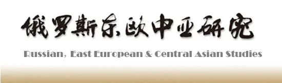

收录于合集
#《俄罗斯东欧中亚研究》 1 个
#期刊目录 11 个


目次
1.精英身份与改革策略——俄罗斯改革模式的次国家比较
费海汀
2.国家精英的再生产与中亚政治转型
孙超
3.俄罗斯央地财政关系与国家治理的财政逻辑
丁超
4.普京时期俄罗斯议会职权的演变——以宪法修改为视角
马天骄
5.俄罗斯对非军售评估
徐国庆
6.当代俄罗斯北极战略：开发合作与安全博弈
万楚蛟
7.中亚国家民法典编纂：国家建构、民族性与现代性
金欣
8.中亚安全再认识：威胁与保障
高焓迅
内容摘要
01
精英身份与改革策略——俄罗斯改革模式的次国家比较
内容提要： 政治精英是决定改革成败与路径选择的关键因素之一，但对于大国而言，多层次的政治结构会使精英与改革间的因果机制复杂化。以俄罗斯为例，俄罗斯联邦主体领导人是改革的主要策动和扩散者，应从这一“次国家层级”入手对俄罗斯精英和改革间因果机制进行分析。本文将联邦主体领导人分为国家、地区、地方、立法、其他五个组别，将改革实践按类型分为政治、经济、社会三个领域，按程度分为封闭、束缚、不兼容、开放与不明显五个层次，按次序分为六种不同模式，以此框架对俄罗斯现任联邦主体领导人的改革意愿进行评估。研究发现，从精英的角度看，精英身份影响了改革策略的选择，而精英整体结构则影响了总体改革模式的塑造。从改革的角度看，改革的选择是多样但不是无限的，改革的次序比程度更加重要，且特定精英群体表现出了对特定改革模式的显著偏好。“自上而下的现代化”“突破性发展”“渐进发展”三种模式在俄罗斯同时存在，但经济改革先行的模式已经为许多政治精英所接受。俄罗斯正在逐步摸索建立符合自身实践的分级制政策实验改革模式。
关键词： 俄罗斯精英 联邦主体 改革策略 改革模式
作者简介： 费海汀，北京大学中国政治学研究中心助理教授。
基金项目： 国家社科基金青年项目“苏联-俄罗斯政治转型研究”（19CKS016）。
DOI： 10.20018/j.cnki.reecas.2022.02.001
02
国家精英的再生产与中亚政治转型
内容提要： 中亚各国独立以来大多走向超级总统制，权力继承问题成为中亚政治稳定的关键。中亚建政初期通过制度设计与协调以及主权问题的解决，政治强人与精英逐渐形成默契。在经济转型、“去俄罗斯化”与民族国家建设中，中亚政治领袖形成长执政模式，国家精英集团完成了政权的合法性构建。各国政治精英配合中亚政治强人进行社会工程构建，在国家现代化、拓展行政权力、形成恩庇网络以及构建新市民社会上达成一致，加强了超级总统制的韧性。中亚政治精英在适应中亚政治演进过程中形成了与中亚政治强人良好的共生关系模式，新的国家精英在体制优势中不断获得市场和社会优势。中亚政权的平稳过渡并未改变政治强人的庇护网络与精英再生产，在疫情引发的不确定性下，政治安全风险更为凸显。
关键词： 精英政治中亚 政治转型权力更替
作者简介： 孙超，中共江苏省委党校国际问题研究中心副教授，华东师范大学俄罗斯研究中心青年研究员。
基金项目： 国家社会科学基金青年项目“冷战后欧亚地区民族分离运动比较研究”（19CGJ014）。
DOI： 10.20018/j.cnki.reecas.2022.02.002
03
俄罗斯央地财政关系与国家治理的财政逻辑
内容提要： 财政关系作为理解国家权力结构的一个重要方面，在俄罗斯央地关系研究中常被忽略。20世纪90年代的立法集权与隐性分权、21世纪初的立法分权与集权现实，既体现了俄罗斯央地财政关系改革在制度设计与政策执行之间的冲突，更凸显了联邦中央与地方政府围绕财政权力的激烈博弈。实践证明，财政分权能够在一定程度上促进俄罗斯经济的区域化发展，但多年来财政制度改革的结果却是巩固了俄联邦中央对地方预算的控制。可见，单纯基于财政联邦主义的分权理论难以理解与把握俄罗斯在此的行为逻辑，需要进行更深层次的探究。本文首先厘清俄罗斯央地财政关系的发展趋势，紧密围绕财政分权的四个维度，即财政规则、税收分权、支出分权和转移支付制度，探讨联邦政府重新获得财政主导权的手段与方式，其行为所遵循的安全、稳定与发展逻辑及在财政政策上的具体表现，据此，判断再转型背景下俄罗斯国家治理面临的难题与央地财政关系的未来走向。
关键词： 俄罗斯 央地财政关系 国家治理 税制改革 转移支付
作者简介： 丁超，中国社会科学院俄罗斯东欧中亚研究所助理研究员。
基金项目： 中国社会科学院智库基础研究课题“普京第四任期经济发展路径与政策演变”、北京市哲学社会科学重点决策咨询课题“基于北京财政可持续发展的重大政策绩效评估机制研究”（21JCB067）。
DOI： 10.20018/j.cnki.reecas.2022.02.003
04
普京时期俄罗斯议会职权的演变——以宪法修改为视角
内容提要： 1993年《俄罗斯联邦宪法》确立了俄罗斯的政治体制是总统集权下的三权分立，同时也规定了俄罗斯议会作为立法机关的地位。这一地位就决定了其职能重在立法。俄罗斯议会为巩固政权而存在，而西方议会旨在限制执政者权力，这是俄罗斯议会与西方议会在本质上的区别，但也是俄罗斯国家长治久安与长远发展的必要条件。俄罗斯历史上也作出过旨在提高议会地位与实际权力的努力。但实践表明，议会权力过大或者实行议会制不仅不适合俄罗斯的政治土壤，而且会导致国家机器停止运转，甚至陷入瘫痪。尤其是叶利钦时期，立法机关与行政机关长期对立导致国家陷入僵局，这一失败教训使普京认识到，只有巩固和不断完善以总统权力为核心的政治体制，才可满足俄罗斯政治稳定与发展的需要。因此，立法机关要与行政机关进行合作；议会职权大小也要随社会转型的需要而不断变化，时而扩大，时而缩小，但无论扩大和缩小到何种程度，都始终要纳入总统的控制之下。
关键词： 俄罗斯议会 国家杜马 宪法修改 普京
作者简介： 马天骄，中国社会科学院大学（研究生院）博士研究生。
DOI： 10.20018/j.cnki.reecas.2022.02.004
05
俄罗斯对非军售评估
内容提要： 俄罗斯是世界军事强国，继承了苏联绝大部分军事遗产，国防工业实力强大。但冷战结束初期俄罗斯政治经济的快速转型与外交调整，给军工发展与国际战略环境造成严重的负面影响。自普京执政以来，俄罗斯致力于推行全方位大国外交理念，并将军火出口作为实现大国复兴战略夙愿的重要抓手。为开发非洲军火市场潜力，俄罗斯在政策制定、经济扶持、装备供应等方面都采取了诸多针对性措施。尽管俄罗斯在对非军售上受到自身经济与技术能力不足、遭遇美欧大国质疑与竞争等因素掣肘，但凭借与非洲国家的传统友好关系及武器装备性价比高的优势，俄罗斯在巩固非洲传统市场与扩展新兴军火市场方面取得了较好的成效。俄非军火贸易的强化一方面有利于非洲国家增强和平与安全能力建设，深化双方外交与战略合作，另一方面有助于展示俄罗斯防务装备的可信度，提升俄罗斯在非洲安全等议题上的发言权，改善俄罗斯大国形象。
关键词： 俄罗斯 非洲 军火出口 武器贸易 军火市场
作者简介： 徐国庆，中国社会科学院西亚非洲研究所副研究员。
基金项目： 本文系国家社会科学基金中国历史研究院重大历史问题研究专项2021年度重大招标项目“《非洲通史》（多卷本）”（LSYZD21022）的阶段性成果。
DOI： 10.20018/j.cnki.reecas.2022.02.005
06
当代俄罗斯北极战略：开发合作与安全博弈
内容提要： 当代俄罗斯北极战略从国家和国际两个层面推进实施，面对不断变化的国际形势，俄罗斯在与主要大国的合作中逐渐走向博弈。在当代俄罗斯北极战略形成和发展的两个阶段，在地理邻近性及历史延续性之下，主要受到俄罗斯与其他国家之间的利益一致性与分歧的影响。当代俄罗斯北极战略中的开发合作遵循着主导、多元、平衡的原则，安全博弈则体现着独立、竞争、排他与合作的特征。在2014年乌克兰危机爆发之后，俄罗斯遭受美欧等西方国家联合制裁，不得不与亚洲国家寻求北极合作，其中，与中国的北极合作是俄罗斯在困境中作出的理性选择，具有广阔前景。
关键词： 俄罗斯 北极战略 北极开发 北极安全博弈 中俄北极合作
作者简介： 万楚蛟，复旦大学国际关系与公共事务学院博士研究生。
DOI： 10.20018/j.cnki.reecas.2022.02.006
07
中亚国家民法典编纂：国家建构、民族性与现代性
内容提要： 1991年中亚五国独立后，四国参照《俄罗斯联邦民法典》和《独联体国家示范民法典》制定了内容、结构、体例和语言风格极为相似的民法典，土库曼斯坦制定了德国式的民法典。民法典编纂的完成让中亚各国内部的民事法律得以统一化和体系化，从法律形式上实现了人民生活的国族化，各国内部不同族群民众有了共同生活的基本规则，实现了国家对社会的形式整合，促进了国家建构的完善。但中亚五国民法典编纂用时较短，没有进行民事习惯调查，本国的法学研究较弱，以移植、借鉴俄罗斯和西方的法律和学说为主，法律与社会较为疏离，因此从法典对民族国家建构的实质性效果来说，仍存在不少问题。中亚国家民法典中存在着民族性与现代性的张力，具体表现为极为复杂的本国法律传统和移植的现代性法律的冲突。中亚国家民法典实效性的提高需要在吸收本民族法律传统、建设成熟的现代法律文化的同时，处理好法律移植面对的排斥性和适应性问题，并在民法典的民族性和普适性之间寻找平衡点。
关键词： 中亚 民法典 法典编纂 国家建构 法律移植
作者简介： 金欣，陕西师范大学“一带一路”建设与中亚研究协同创新中心助理研究员。
DOI： 10.20018/j.cnki.reecas.2022.02.007
08
中亚安全再认识：威胁与保障
内容提要： 中亚国家三十余年的发展历程表明，中亚安全既取决于其能否探索出符合国情的政治经济模式，也取决于其与周边大国之间的关系，还取决于其在全球化背景下的身份构建和发展定位。中亚安全研究涉及三类问题，一是“谁的安全”问题，将中亚整体作为安全研究对象，探寻中亚国家在国家—地区—全球三个层面面临的安全威胁；二是回答“存在哪些安全威胁”问题，以权力、制度和观念三个视角加以分析；三是分析“如何维护安全”问题，中亚国家在政治、经济、社会安全以及打击“三股势力”、维护生态环境等领域取得的成效和面临的突出问题。政治安全是中亚一切安全的“总阀门”，外部势力煽动的“颜色革命”是政治安全的主要威胁，经济社会发展状况及民生保障水平是内部安全稳定的根本因素。当前，中亚地区安全保障虽然存在诸多潜在威胁，但总体上仍可维持安全稳定局面。
关键词： 中亚安全 政权安全 区域治理 地区秩序
作者简介： 高焓迅，中国社会科学院俄罗斯东欧中亚研究所助理研究员。
基金项目： 本文为国家社科基金重大项目“上海合作组织命运共同体构建研究”（19ZDA130）的阶段性研究成果。
DOI： 10.20018/j.cnki.reecas.2022.02.008
排版 | 吴梦婷
文章观点不代表本平台观点，本平台评译分享的文章均出于专业学习之用, 不以任何盈利为目的，内容主要呈现对原文的介绍，原文内容请通过各高校购买的数据库自行下载。